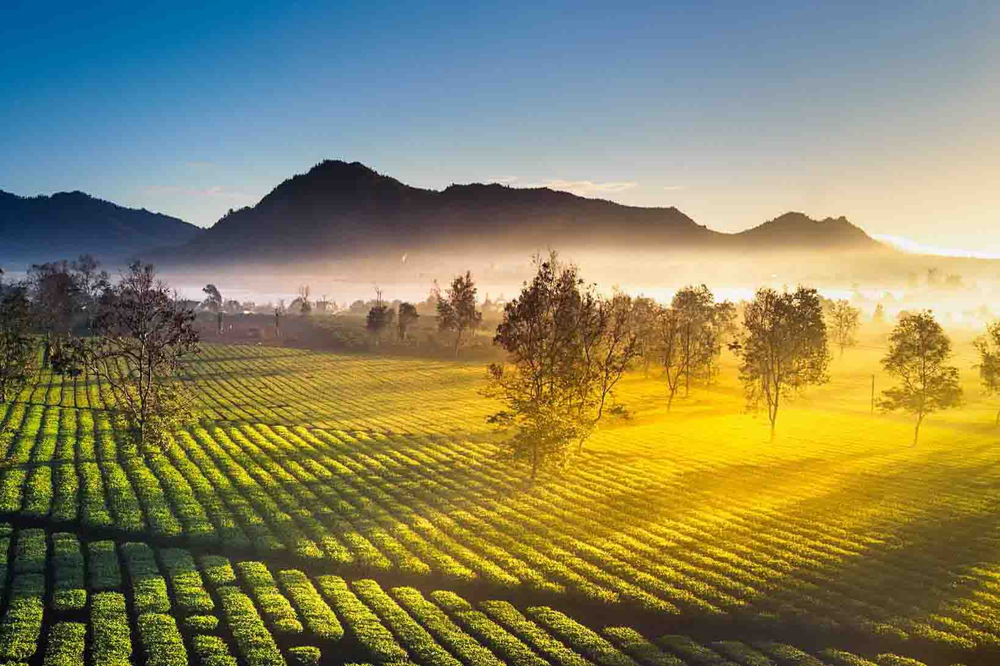

Tây Nguyên
và những điều bạn chưa biết.
Tây Nguyên gồm 5 tỉnh, xếp theo thứ tự vị trí địa lý từ bắc xuống nam gồm Kon Tum, Gia Lai, Đắk Lắk, Đắk Nông và Lâm Đồng với diện tích tự nhiên là 54.474 km2 chiếm 16,8% diện tích tự nhiên cả nước.
Tây Nguyên là vùng cao nguyên, phía bắc giáp tỉnh Quảng Nam, phía đông giáp các tỉnh Quảng Ngãi, Bình Định, Phú Yên, Khánh Hòa, Ninh Thuận, Bình Thuận, phía nam giáp các tỉnh Đồng Nai, Bình Phước, phía tây giáp với các tỉnh Attapeu (Lào) và Ratanakiri và Mondulkiri (Campuchia). Trong khi Kon Tum có biên giới phía tây giáp với cả Lào và Campuchia, thì Gia Lai, Đắk Lắk và Đắk Nông chỉ có chung đường biên giới với Campuchia. Còn Lâm Đồng không có đường biên giới quốc tế.
Thực chất, Tây Nguyên không phải là một cao nguyên duy nhất mà là một loạt cao nguyên liền kề. Đó là các cao nguyên Kon Tum cao khoảng 500 m, cao nguyên Kon Plông, cao nguyên Kon Hà Nừng, Plâyku cao khoảng 800 m, cao nguyên M'Drăk cao khoảng 500 m, cao nguyên Buôn Ma Thuột cao khoảng 500 m, Mơ Nông cao khoảng 800-1000 m, cao nguyên Lâm Viên cao khoảng 1500 m và cao nguyên Di Linh cao khoảng 900-1000 m. Tất cả các cao nguyên này đều được bao bọc về phía Đông bởi những dãy núi và khối núi cao (chính là Trường Sơn Nam).


Tây Nguyên lại có thể chia thành ba tiểu vùng địa hình đồng thời là ba tiểu vùng khí hậu, gồm Bắc Tây Nguyên (tương ứng với các tỉnh Kon Tum và Gia Lai, trước là một tỉnh), Trung Tây Nguyên (tương ứng với các tỉnh Đắk Lắk và Đắk Nông), Nam Tây Nguyên (tương ứng với tỉnh Lâm Đồng). Trung Tây Nguyên có độ cao thấp hơn và nền nhiệt độ cao hơn hai tiểu vùng phía Bắc và Nam.
Với đặc điểm thổ nhưỡng đất đỏ bazan ở độ cao khoảng 500 m đến 600 m so với mặt biển, Tây Nguyên rất phù hợp với những cây công nghiệp như cà phê, ca cao, hồ tiêu, dâu tằm. Cây điều và cây cao su cũng đang được phát triển tại đây. Cà phê là cây công nghiệp quan trọng số một ở Tây Nguyên. Tây Nguyên cũng là vùng trồng cao su lớn thứ hai sau Đông Nam Bộ. Và đang tiến hành khai thác Bô xít. Tây Nguyên cũng là khu vực ở Việt Nam còn nhiều diện tích rừng với thảm sinh vật đa dạng, trữ lượng khoáng sản phong phú hầu như chưa khai thác và tiềm năng du lịch lớn, Tây nguyên có thể coi là mái nhà của miền trung, có chức năng phòng hộ rất lớn. Tuy nhiên, nạn phá rừng, hủy diệt tài nguyên thiên nhiên và khai thác lâm sản bừa bãi chưa ngăn chận được tại đây có thể dẫn đến nguy cơ làm nghèo kiệt rừng và thay đổi môi trường sinh thái.
Nhưng khi nhắc về tây nguyên, mọi người thường nghĩ Tây Nguyên chỉ là nơi trồng những loài cây công nông nghiệp lâu năm như cà phê, cây keo, cây tiêu,... Nhưng ngoài ra, Tây nguyên lại là nơi du lịch thiên nhiên cực kì phát triển.Bao gồm các khu du lịch sinh thái tự nhiên như Hồ Lắk – Đắk Lắk, Suối Ong, Biển Hồ , Núi lửa Chư Đăng Ya và đặc biệt chính là thác Hang Én nổi tiếng tại GiaLai.
Không chỉ về phong cảnh, khi đến Tây Nguyên mọi người còn được trãi nghiệm cuộc sống cũng như phong tục tập quán của người dân tộc thiểu số, những buổi biểu diễn văn nghệ đắc sắc, múa khiên ( dân tộc Bana) , mừng lúa mới ( dân tộc Tày ), và đặc biệt nhất là được trải nghiệm những món ăn đặc sản nơi này.
Ngoài ra Tây Nguyên còn có những đặc sản Tây Nguyên hùng vĩ với núi rừng bạt ngàn không chỉ có nhiều cảnh quan tuyệt đẹp như Núi LangBiang, thác Đray Nur, Hồ Ea Snô, hồ Lăk,... mà còn có nhiều đặc sản hấp dẫn đang chờ du khách khám phá. Gồm Những món ăn đậm nét văn hoa của người dân tộc BaNa như là gà nướng cơm lam, hay các loại hạt như hạt Macca, hạt điều,...